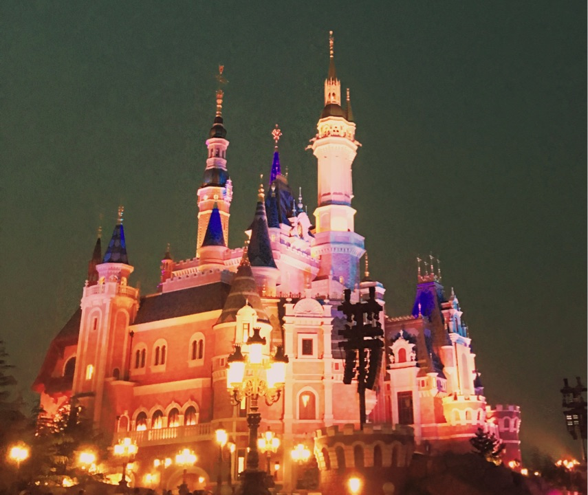

正文:
最近新租了一个房子，自己住，算是彻底一个人生活了。
读大学+读研共七年，工作三年，这十年里几乎都是一个人，很喜欢一个人的状态。
很久之前就看到高木直子“一个人”系列书，暗暗决定要像她一样活着。十年之后，庆幸自己终于迎来了最想要的生活。
很不喜欢社会上关于单身女性就该自怨自艾的论调，我希望自己一直保持对爱的渴望和爱的能力，也能在暂时没有爱情时，过好一个人的生活。
单身女性的生活究竟是什么样？对我来说，是这样的：
1.一个人旅行
从2016年开始，定下一个小目标：每个月都争取去一座新的城市旅行，时间选在周末或者假期。
周末在国内，长假期就出国。
不推荐任何辞职休学去旅行的做法，因为我觉得真正的英雄主义是，既能忍受生活的苟且，也一直有情怀去向往诗和远方的田野。
一个人在四川，站在高原的草地之上，天很冷很冷，但眼眶很热很热：

爬了雪山，牵了白马，觉得人必须有一次高原反应的经历，晕晕乎乎，但不妨碍心里突突突突涌动的热血。
一个人在南京，住在秦淮河边的青旅。它有一个宽敞的天台，我坐了一上午，很想再多停留几天：
一个人在日本，去了京都、东京、大阪。
一个人看和歌山的清晨，云太好看了。听着若有若无的鸟鸣，我独自沿着这条路走了很久很久，跟着云好像可以一直走下去。
一个人吃了真正的深夜食堂，遇见了奈良的鹿：

在富士山下看到各样颜色的鱼倒影在清澈的湖水中，水里还有天，水里还有云：
一个人在首尔跨年，吃烤肉，看铁塔：
新年之夜，明洞街头的灯光太美啦：
当时正好《鬼怪》热播：
所以走到同样的灯下时感觉很奇妙：
一个人在厦门鼓浪屿。日光倾城，走着走着就想感叹：好天气堪与谁说？
和朋友在迪士尼，看完烟火表演时特别恋恋不舍，仿佛自己被自己的城堡放逐（哈哈哈，内心戏不要太多……）

和朋友在香港，太平山顶俯瞰：
还一个人去了绍兴、杭州、哈尔滨、长沙、深圳……但是没有特别好看的照片，就不放啦……
虽然一个人旅行，只能拍风景，风景照里都没有我，可还是喜欢出门，喜欢去远的地方。
像我这样的“天空爱好者”，光坐飞机本身就已经很开心了，就像sheldon喜欢坐火车一样。我喜欢在飞机上，看向舷窗外，深夜灯火连缀成星河，白日云朵连绵如雪原。
旅行让我学会了更专注于生活本身，看云的时候只看云，听风的时候就听风。
我喜欢的作者简安说：“多住一个城市总是好的。”再多去一个城市，也是我的向往。
2.一个人健身
因为体重一直保持的比较稳定，所以健身也没有特别重的压力，做得最多的就是腰腹和臀部塑形，反正健身对我来说也是一件快乐的事情。
一般去健身房。如果不去健身房的话，每天在家里也会做两百个卷腹，和两百个仰卧举腿（我自己的粗糙叫法…），保持腹部的力量。
但是还是挺喜欢健身房的，零下十几度的天，钻进健身房换上短袖练到大汗淋漓的感觉太爽啦：
3.一个人读书
读书是我最爱的事情啦。真的很喜欢看书，每次开心的时候就看本书来庆祝，不开心的时候也看本书来疗伤。
在家在办公室会看纸质书，外出时就会用kindle。
有时候有感想就会发到朋友圈里，作为一个小小的记录：

每次读书都会做读书笔记，到现在为止已经写了好多本：
（字很丑，还需要练）
在这个处处都是电子产品的时代，我还是喜欢看纸书，用纸笔写东西。
引用苏珊桑塔格的话：阅读是我的娱乐、我的消遣、我的安慰、我小小的自毁。
4.一个人写东西
从2015年开始，每天都会至少写作1000字。有些文章陆陆续续发在了公众号上，有些放进了书里。
以前觉得每天写东西特别难，自从开始写公众号之后，每天都写，反而不觉得难了，迅速反应，迅速成文，感觉思维比以前敏捷多了。
没有纸笔的时候就写在手机备忘录里，手机是去年五月换的，已经攒了五百多条了。
写东西让我有了记录生活的机会，也有了发泄情绪的出口。感谢这几年的坚持，让我积累出了两本书，实现了少年时的梦想。
5.一个人抄经
虽然不信任何教，但从去年起开始抄经，作为让心情宁静和放松下来的方式。
抄经的时候所有神经只专注于“抄写”本身，这种仪式感就像冥想一样，可以抚平心绪。
每天只需一小会儿，让自己从嘈杂的信息、不间断的电子产品、疲惫的生活里抽离出来，听听自己灵魂汩汩流动的声音。
我喜欢这种仪式感，仿佛一个奇妙的入口，让自己不再焦躁。
作为单身女性，我的生活就是这样啦，感觉自己过得很开心呀。
正好看到一张图。很希望自己能成为这样的女孩，努力～～
——————
更多内容欢迎大家关注我的公众号：伊心（yixintonxue） 新书叫《留住所有时间变美好》，也欢迎阅读噢。